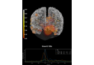

mne.SourceSpaces#
- class mne.SourceSpaces(source_spaces, info=None)[source]#
Represent a list of source space.
This class acts like a list of dictionaries containing the source space information, one entry in the list per source space type. See Notes for details.
Warning
This class should not be created or modified by the end user. Use
mne.setup_source_space(),mne.setup_volume_source_space(), ormne.read_source_spaces()to createSourceSpaces.- Parameters:
See also
mne.setup_source_spaceSetup a surface source space.
mne.setup_volume_source_spaceSetup a volume source space.
mne.read_source_spacesRead source spaces from a file.
Notes
Each element in SourceSpaces (e.g.,
src[0]) is a dictionary. For example, a surface source space will havelen(src) == 2, one entry for each hemisphere. A volume source space will havelen(src) == 1if it uses a single monolithic grid, orlen(src) == len(volume_label)when created with a list-of-atlas-labels. A mixed source space consists of both surface and volumetric source spaces in a single SourceSpaces object.Each of those dictionaries can be accessed using standard Python
dictaccess using the string keys listed below (e.g.,src[0]['type'] == 'surf'). The relevant key/value pairs depend on the source space type:Relevant to all source spaces
The following are always present:
- idint
The FIF ID, either
FIFF.FIFFV_MNE_SURF_LEFT_HEMIorFIFF.FIFFV_MNE_SURF_RIGHT_HEMIfor surfaces, orFIFF.FIFFV_MNE_SURF_UNKNOWNfor volume source spaces.- typestr
The type of source space, one of
{'surf', 'vol', 'discrete'}.- npint
Number of vertices in the dense surface or complete volume.
- coord_frameint
The coordinate frame, usually
FIFF.FIFFV_COORD_MRI.- rrndarray, shape (np, 3)
The dense surface or complete volume vertex locations.
- nnndarray, shape (np, 3)
The dense surface or complete volume normals.
- nuseint
The number of points in the subsampled surface.
- inusendarray, shape (np,)
An integer array defining whether each dense surface vertex is used (
1) or unused (0).- vertnondarray, shape (n_src,)
The vertex numbers of the dense surface or complete volume that are used (i.e.,
np.where(src[0]['inuse'])[0]).- subject_his_idstr
The FreeSurfer subject name.
Surface source spaces
Surface source spaces created using
mne.setup_source_space()can have the following additional entries (which will be missing, or have values ofNoneor0for volumetric source spaces):- ntriint
Number of triangles in the dense surface triangulation.
- trisndarray, shape (ntri, 3)
The dense surface triangulation.
- nuse_triint
The number of triangles in the subsampled surface.
- use_trisndarray, shape (nuse_tri, 3)
The subsampled surface triangulation.
- distscipy.sparse.csr_matrix, shape (n_src, n_src) | None
The distances (euclidean for volume, along the cortical surface for surfaces) between source points.
- dist_limitfloat
The maximum distance allowed for inclusion in
nearest.- pinfolist of ndarray
For each vertex in the subsampled surface, the indices of the vertices in the dense surface that it represents (i.e., is closest to of all subsampled indices), e.g. for the left hemisphere (here constructed for
samplewithspacing='oct-6'), which vertices did we choose? Note the first is 14:>>> src[0]['vertno'] array([ 14, 54, 59, ..., 155295, 155323, 155330])
And which dense surface verts did our vertno[0] (14 on dense) represent?
>>> src[0]['pinfo'][0] array([ 6, 7, 8, 9, 10, 11, 12, 13, 14, 15, 16, 17, 18, 19, 20, 21, 22, 23, 24, 25, 29, 30, 31, 39, 134, 135, 136, 137, 138, 139, 141, 142, 143, 144, 149, 150, 151, 152, 156, 162, 163, 173, 174, 185, 448, 449, 450, 451, 452, 453, 454, 455, 456, 462, 463, 464, 473, 474, 475, 485, 496, 497, 512, 864, 876, 881, 889, 890, 904])
- patch_indsndarray, shape (n_src_remaining,)
The patch indices that have been retained (if relevant, following forward computation. After just
mne.setup_source_space(), this will benp.arange(src[0]['nuse']). After forward computation, some vertices can be excluded, in which case this tells you which patches (of the originalnp.arange(nuse)) are still in use. So if some vertices have been excluded, the line above forpinfofor completeness should be (noting that the first subsampled vertex ([0]) represents the following dense vertices):>>> src[0]['pinfo'][src[0]['patch_inds'][0]] array([ 6, 7, 8, 9, 10, 11, 12, 13, 14, 15, 16, 17, 18, 19, 20, 21, 22, 23, 24, 25, 29, 30, 31, 39, 134, 135, 136, 137, 138, 139, 141, 142, 143, 144, 149, 150, 151, 152, 156, 162, 163, 173, 174, 185, 448, 449, 450, 451, 452, 453, 454, 455, 456, 462, 463, 464, 473, 474, 475, 485, 496, 497, 512, 864, 876, 881, 889, 890, 904])
- nearestndarray, shape (np,)
For each vertex on the dense surface, this gives the vertex index (in the dense surface) that each dense surface vertex is closest to of the vertices chosen for subsampling. This is essentially the reverse map off
pinfo, e.g.:>>> src[0]['nearest'].shape (115407,)
Based on
pinfoabove, this should be 14:>>> src[0]['nearest'][6] 14
- nearest_distndarray, shape (np,)
The distances corresponding to
nearest.
Volume source spaces
Volume source spaces created using
mne.setup_volume_source_space()can have the following additional entries (which will be missing, or have values ofNoneor0for surface source spaces):- mri_width, mri_height, mri_depthint
The MRI dimensions (in voxels).
- neighbor_vertndarray
The 26-neighborhood information for each vertex.
- interpolatorscipy.sparse.csr_matrix | None
The linear interpolator to go from the subsampled volume vertices to the high-resolution volume.
- shapetuple of int
The shape of the subsampled grid.
- mri_ras_tinstance of
Transform The transformation from MRI surface RAS (
FIFF.FIFFV_COORD_MRI) to MRI scanner RAS (FIFF.FIFFV_MNE_COORD_RAS).- src_mri_tinstance of
Transform The transformation from subsampled source space voxel to MRI surface RAS.
- vox_mri_tinstance of
Transform The transformation from the original MRI voxel (
FIFF.FIFFV_MNE_COORD_MRI_VOXEL) space to MRI surface RAS.- mri_volume_namestr
The MRI volume name, e.g.
'subjects_dir/subject/mri/T1.mgz'.- seg_namestr
The MRI atlas segmentation name (e.g.,
'Left-Cerebellum-Cortex'from the parametervolume_label).
Source spaces also have some attributes that are accessible via
.access, likesrc.kind.- Attributes:
Methods
__add__(other)Combine source spaces.
__getitem__(*args, **kwargs)Get an item.
copy()Make a copy of the source spaces.
export_volume(fname[, include_surfaces, ...])Export source spaces to nifti or mgz file.
plot([head, brain, skull, subjects_dir, ...])Plot the source space.
save(fname[, overwrite, verbose])Save the source spaces to a fif file.
- copy()[source]#
Make a copy of the source spaces.
- Returns:
- srcinstance of
SourceSpaces The copied source spaces.
- srcinstance of
- export_volume(fname, include_surfaces=True, include_discrete=True, dest='mri', trans=None, mri_resolution=False, use_lut=True, overwrite=False, verbose=None)[source]#
Export source spaces to nifti or mgz file.
- Parameters:
- fnamepath-like
Name of nifti or mgz file to write.
- include_surfaces
bool If True, include surface source spaces.
- include_discrete
bool If True, include discrete source spaces.
- dest
'mri'|'surf' If ‘mri’ the volume is defined in the coordinate system of the original T1 image. If ‘surf’ the coordinate system of the FreeSurfer surface is used (Surface RAS).
- trans
dict,str, orNone Either a transformation filename (usually made using mne_analyze) or an info dict (usually opened using read_trans()). If string, an ending of
.fifor.fif.gzwill be assumed to be in FIF format, any other ending will be assumed to be a text file with a 4x4 transformation matrix (like the--transMNE-C option. Must be provided if source spaces are in head coordinates and include_surfaces and mri_resolution are True.- mri_resolution
bool|str If True, the image is saved in MRI resolution (e.g. 256 x 256 x 256), and each source region (surface or segmentation volume) filled in completely. If “sparse”, only a single voxel in the high-resolution MRI is filled in for each source point.
Changed in version 0.21.0: Support for “sparse” was added.
- use_lut
bool If True, assigns a numeric value to each source space that corresponds to a color on the freesurfer lookup table.
- overwrite
bool If True (default False), overwrite the destination file if it exists.
New in version 0.19.
- verbose
bool|str|int|None Control verbosity of the logging output. If
None, use the default verbosity level. See the logging documentation andmne.verbose()for details. Should only be passed as a keyword argument.
Notes
This method requires nibabel.
Examples using
export_volume:Compute MNE inverse solution on evoked data with a mixed source space
Compute MNE inverse solution on evoked data with a mixed source space
- plot(head=False, brain=None, skull=None, subjects_dir=None, trans=None, verbose=None)[source]#
Plot the source space.
- Parameters:
- head
bool If True, show head surface.
- brain
bool|str If True, show the brain surfaces. Can also be a str for surface type (e.g.,
'pial', same as True). Default is None, which means'white'for surface source spaces andFalseotherwise.- skull
bool|str|listofstr|listofdict|None Whether to plot skull surface. If string, common choices would be
'inner_skull', or'outer_skull'. Can also be a list to plot multiple skull surfaces. If a list of dicts, each dict must contain the complete surface info (such as you get frommne.make_bem_model()). True is an alias of ‘outer_skull’. The subjects bem and bem/flash folders are searched for the ‘surf’ files. Defaults to None, which is False for surface source spaces, and True otherwise.- subjects_dirpath-like |
None Path to
SUBJECTS_DIRif it is not set in the environment.- transpath-like |
'auto'|dict|None The full path to the head<->MRI transform
*-trans.fiffile produced during coregistration. If trans is None, an identity matrix is assumed. This is only needed when the source space is in head coordinates.- verbose
bool|str|int|None Control verbosity of the logging output. If
None, use the default verbosity level. See the logging documentation andmne.verbose()for details. Should only be passed as a keyword argument.
- head
- Returns:
- figinstance of
Figure3D The figure.
- figinstance of
Examples using
plot:Compute MNE inverse solution on evoked data with a mixed source space
Compute MNE inverse solution on evoked data with a mixed source space
- save(fname, overwrite=False, *, verbose=None)[source]#
Save the source spaces to a fif file.
- Parameters:
- fnamepath-like
File to write.
- overwrite
bool If True (default False), overwrite the destination file if it exists.
- verbose
bool|str|int|None Control verbosity of the logging output. If
None, use the default verbosity level. See the logging documentation andmne.verbose()for details. Should only be passed as a keyword argument.
Examples using mne.SourceSpaces#
Source alignment and coordinate frames

EEG forward operator with a template MRI
How MNE uses FreeSurfer’s outputs
The SourceEstimate data structure
Source reconstruction using an LCMV beamformer
Visualize source time courses (stcs)
Permutation t-test on source data with spatio-temporal clustering
2 samples permutation test on source data with spatio-temporal clustering
Repeated measures ANOVA on source data with spatio-temporal clustering


Simulate raw data using subject anatomy
Generate simulated source data
Display sensitivity maps for EEG and MEG sensors
Generate a left cerebellum volume source space
Compute MNE-dSPM inverse solution on evoked data in volume source space

Extracting the time series of activations in a label
Compute sparse inverse solution with mixed norm: MxNE and irMxNE
Compute MNE inverse solution on evoked data with a mixed source space
Morph volumetric source estimate

Visualize source leakage among labels using a circular graph
Plot point-spread functions (PSFs) for a volume